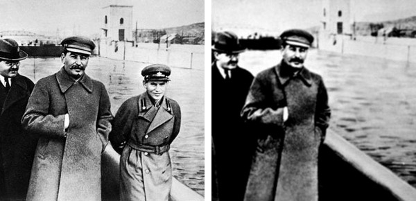
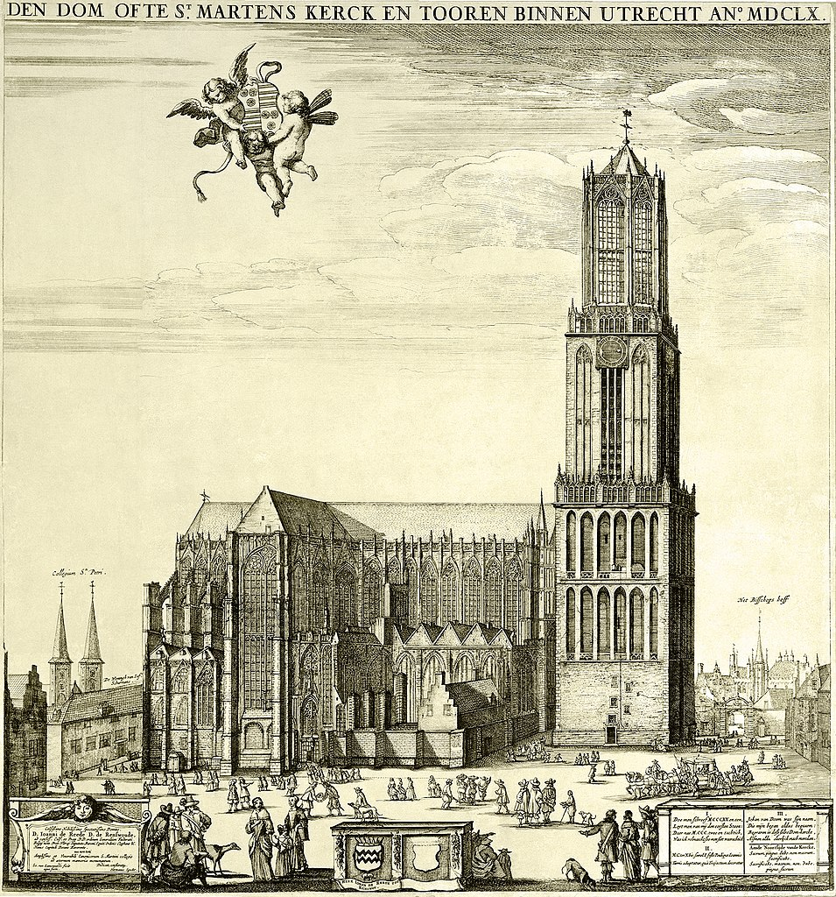

Have you ever wondered how much we can learn on politics by looking at a stone?
Thanks to inscriptions the ancient world offers us a new insight into political situation almost 2 500 years ago.
On this website you will find an interesting source that reveals a mysterious story.
In 1937 Joseph Stalin accompanied by the most important officials of the Soviet Russia regime visited the canal Moscow-Volga construction. One of these figures was Nikolai Yezhov – the head of the NKVD responsible for the bloody Stalinist purges.
Fallen out of the dictator’s favour and considered to be an enemy of the nation, Yezhov was executed two years after the aforementioned event. Not only was Yezov physically eliminated, the memory on him was also expected to disappear. The former NKVD head was then removed from the propaganda film footage, school handbooks and photographs. Above we can see the famous pair of photos: the former was taken in 1937, the latter was distributed after Yezhof's death.
The practice of manipulation of memory goes on and on. Let us go to Classical Athens where an interesting
inscription reveals events parallel to our modern times.
Turning to the story, let us present the whole text with translation of the inscription followed by its drawing.
It is this very source that allows us to tell about the politics of the fifth century Athens
Putting aside some of the terms that may not seem familiar the story is straightforward. A group of inhabitants of Thasos – this fact of their ethnicity we know from other sources – was granted a special political honour. Proxenia can be defined as a privilege or an office granted to a citizen of a polis which entitled him to represent a foreign polis that granted proxenia. A proxenos was then someone similar to a modern ambassador The inscriptions informs us that the original decree on which the honour of proxenia was written was destroyed by ‘the Thirty’. ‘Thirty Tyrants’ denotes the group of oligarchs ruling Athens in 404-403 B.C; they seized control of the polis after the failure of the Athens in the Peloponnesian War. From the other epigraphical material we know that the tyrants participated in destruction of other honourary inscriptions. By doing so, they tried to invalidate the legal decision and to erase the memory on those they considered enemies.
The inscription clearly illustrates that power tends to manipulate the memory – regardless of an epoch.
This source provokes to ask more questions and tell more stories. This website presents some of them and also shows how can we benefit from epigraphy in general terms.
Een afbeelding toevoegen aan een website is erg eenvoudig:
Over een paar weken gaan jullie een eigen podcast opnemen. Het resultaat, een MP3-bestand, kun je toevoegen aan je website. Om te zien hoe dat werkt kunnen we hier, als voorbeeld, luisteren naar Nocturne Op. 9 No. 1 van Frederic Chopin:
Ook kun je video’s van YouTube embedden:
Via Google kun je meer informatie vinden over het embedden van YouTube-video’s, maar als je liever Vimeo gebruikt kan dat natuurlijk ook.
Wie na afbeeldingen, MP3-bestanden en YouTube-video’s nóg meer aan z’n website wilt toevoegen, dat kan! Wellicht een interactieve landkaart? Dat kan met Leaflet!